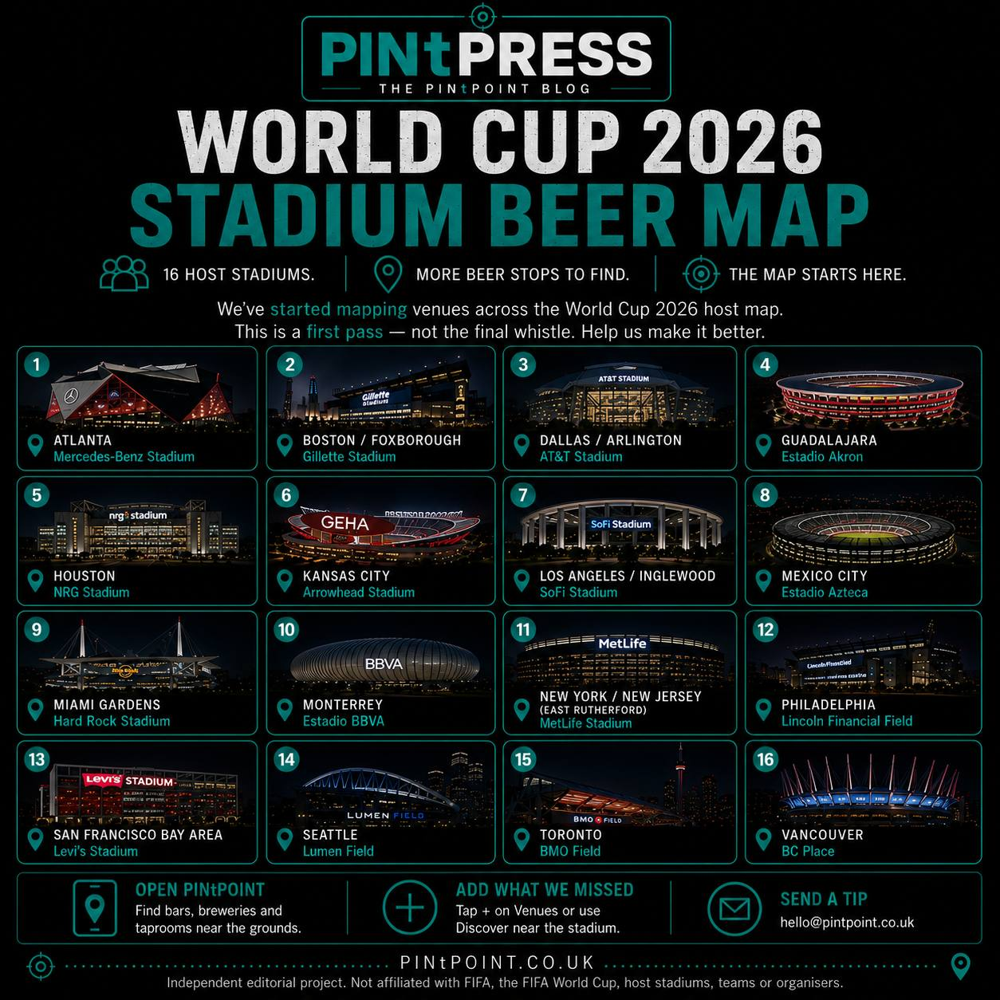

World Cup 2026 Stadium Beer Map
Help us find good beer near the grounds
The World Cup is here, across 16 host stadiums in North America. We mapped the bars, pubs, breweries, taprooms, bottle shops and beer gardens that can actually help fans before or after a match.
Some host areas came together cleanly. Some are awkward. Some still need proper local knowledge before we'd trust the map. That's where you come in.

The 16 host stadiums
PINtPOINT now covers venues around every World Cup 2026 host stadium:
- Mercedes-Benz Stadium, Atlanta
- Gillette Stadium, Boston / Foxborough
- AT&T Stadium, Dallas / Arlington
- NRG Stadium, Houston
- Arrowhead Stadium, Kansas City
- SoFi Stadium, Los Angeles / Inglewood
- Hard Rock Stadium, Miami Gardens
- MetLife Stadium, New York / New Jersey
- Lincoln Financial Field, Philadelphia
- Levi's Stadium, San Francisco Bay Area / Santa Clara
- Lumen Field, Seattle
- BMO Field, Toronto
- BC Place, Vancouver
- Estadio Akron, Guadalajara
- Estadio Azteca, Mexico City
- Estadio BBVA, Monterrey
The aim was simple: help fans find somewhere decent near the ground.
Not just "a bar somewhere in the city". Not a generic search result. Not a famous place that looks good on a list but makes no sense on matchday.
We were looking for beer stops that are actually useful.
What counts as useful?
For the Stadium Beer Map, we kept places a travelling fan could realistically use before or after a match:
- close enough to the stadium, or realistic enough by transit, walk or short ride
- beer-relevant: bars, pubs, breweries, taprooms, bottle shops and beer gardens
- better than the nearest generic "bar" result
- not a great city-centre venue pretending to be near the ground
That last one matters.
World Cup host geography is messy. "Dallas" might mean Arlington. "San Francisco" might mean Santa Clara. "New York / New Jersey" might mean East Rutherford. The name on the fixture list and the reality on the ground are not always the same thing.
That is exactly why the map needs local knowledge.
Scouting notes
Some host areas landed cleanly.
Atlanta and Seattle came through with obvious first-pass options near the grounds. Philadelphia, Vancouver and Toronto did too.
Others were geography traps.
Dallas / Arlington and the Bay Area reminded us that "host city" and "walkable stadium beer" are not the same thing. A brilliant beer city can still have a stadium area that needs proper scouting.
Mexico City, Guadalajara and Monterrey are exactly where local knowledge matters most. Search results are one thing. Knowing where a fan should actually go before kick-off is another.
MetLife is still the loudest help-wanted flag. New York has no shortage of places to drink. East Rutherford is the harder question.
That's the point of this project.
The map isn't finished. The scouting file is open — and the tournament is the test.
Help complete the map
If you know a great bar, brewery, taproom, bottle shop or beer garden near a World Cup host stadium, add it to PINtPOINT.
If something on the map looks wrong, tell us.
If the obvious recommendation is miles away and useless on matchday, tell us that too.
Local knowledge beats a lazy list every time.
Help us complete the World Cup beer map. Open PINtPOINT near a host stadium and add the bars, breweries, taprooms and bottle shops we've missed.
Know a great bar near a World Cup stadium? Add it to PINtPOINT.
Open PINtPOINTIn the app: tap + on the Venues screen to add a venue, or use Discover near the stadium and confirm what's pouring. Or email us at hello@pintpoint.co.uk with the venue name, host city, and a sentence on what makes it worth a stop — we'll add it for you.
Separately, we're also planning a Beer World Cup XI. That one is for arguments. This map is for finding somewhere decent before kick-off.